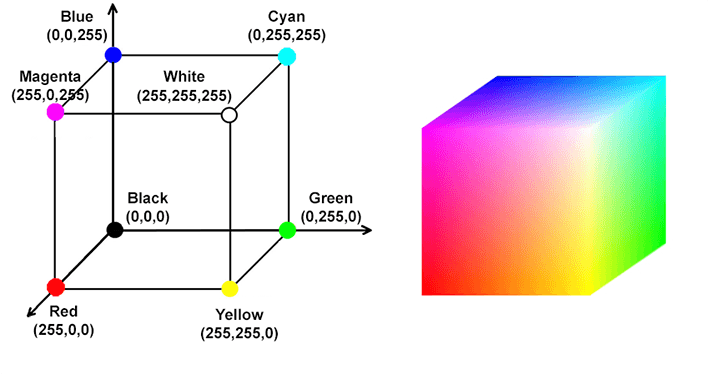

Tratamiento de imagen, color, capas y la revolución de la IA generativa.
Antes de abrir siquiera una imagen, debes tomar la decisión más importante como diseñador gráfico: ¿Dónde se va a ver tu diseño?
Es la densidad de puntos que tiene una imagen. Si te equivocas aquí, arruinarás el trabajo:
¿Alguna vez has diseñado algo con colores neón brutales en el ordenador y, al imprimirlo, se veía apagado y grisáceo? Es culpa del modo de color.
Se suman luces. La mezcla de todos crea el BLANCO.
Se suma tinta. La mezcla de todos crea el NEGRO.
GIMP trabaja internamente en RGB (Rojo, Verde, Azul). Las impresoras usan CMYK (Cian, Magenta, Amarillo, Negro). El papel no tiene luz propia, por lo que nunca podrá reproducir colores tan brillantes como tu monitor LED.

Representación matemática tridimensional: El cubo RGB y CMYK.
A dominar el editor se aprende practicando. Estas son las funciones vitales para crear vuestra cartelería:
El concepto más importante. Piensa en las capas como láminas de cristal apiladas. El fondo va abajo, luego pones una imagen recortada encima, y arriba del todo el texto. Si borras algo en la capa superior, no afectará a las de abajo.
Sirve para reencuadrar una fotografía eliminando lo que sobra de los bordes. Seleccionas el área que quieres mantener, pulsas Intro y el resto desaparece. Atención: Es destructivo, recortará todas las capas a la vez.
¿Hay una mancha, un grano o una papelera arruinando la foto? Con el tampón pulsas Ctrl + Clic en una zona "limpia" para copiar esa textura, y luego "pintas" sobre la mancha. Estarás copiando píxeles de un sitio a otro.
Crea automáticamente una capa nueva exclusiva para las letras. Puedes cambiar la fuente, tamaño, espaciado y color. Como es una capa independiente, siempre podrás moverla por encima de las imágenes sin mezclarse.
La industria del diseño gráfico ha cambiado para siempre. Programas como Photoshop y diversas webs ya integran IA generativa para editar imágenes. Como futuros creadores, debéis dominar estas técnicas:
*Pregunta al profesor por herramientas como DALL-E, Midjourney o Stable Diffusion para generar vuestros propios fondos.